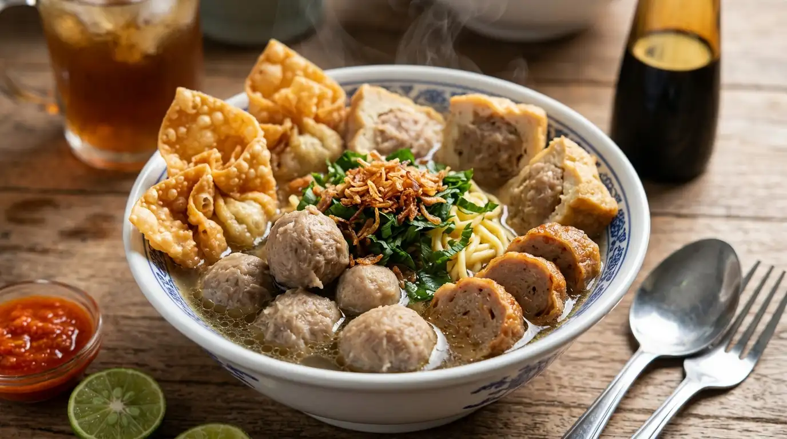
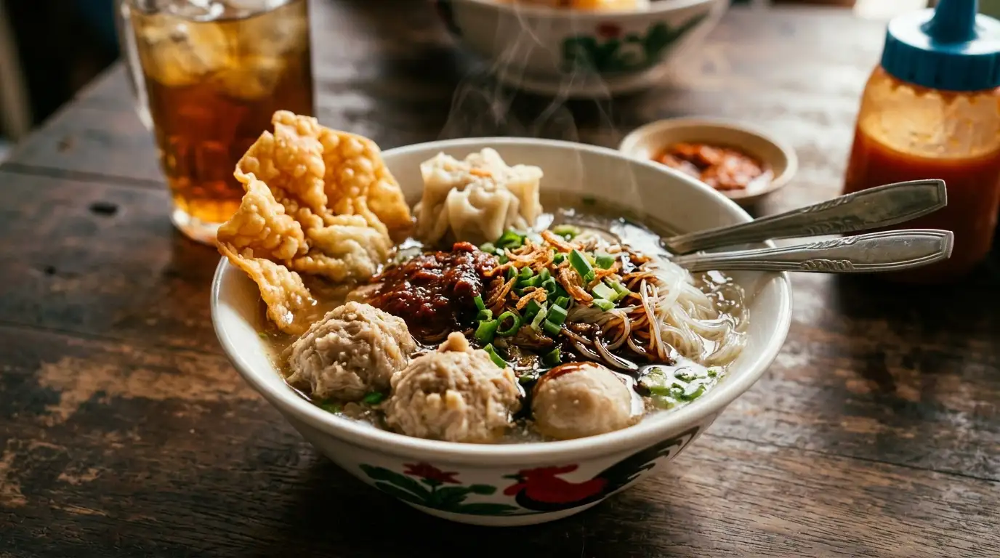
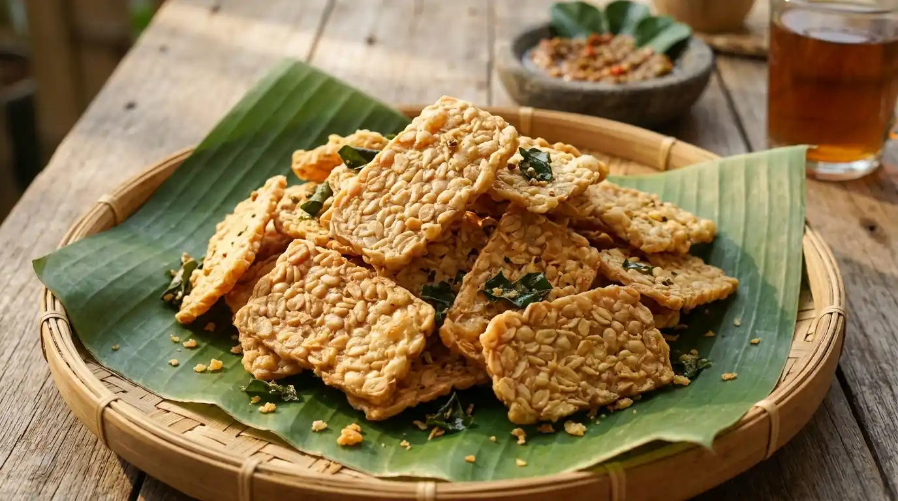
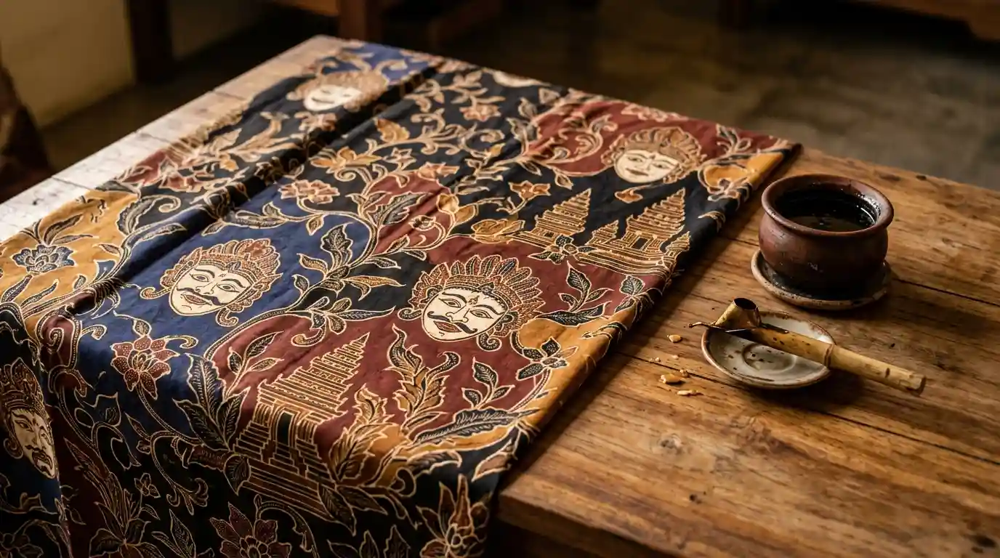

KlojenTutupBelanja Produk Asli UMKM Malang Raya, Langsung ke Penjualnya!
Temukan kuliner legendaris, oleh-oleh khas, kriya kreatif, hingga jasa tepercaya di seputaran Kota Malang, Kabupaten Malang, dan Kota Batu.
Daftar Katalog UMKM


370+Usaha terdaftar
3Wilayah Malang Raya
0%Komisi untuk penjual
1×24Jam verifikasi toko
Pilihan UMKM Malang Raya Minggu Ini
Rekomendasi produk lokal dengan ulasan terbaik dan pelayanan ramah.
Mengapa Beli Melalui Website Ini?
1
Langsung ke Pemilik
Tanpa perantara dan biaya komisi, harga murni dari pedagang.
2
Dukung UMKM Kecil
Setiap pesanan mengalir langsung ke dapur UMKM Malang Raya.
3
Respon Fleksibel via WA
Bebas negosiasi varian, tanya stok terkini, dan tentukan metode kirim sendiri.
Artikel UMKM Malang Raya

Profil UMKM
3 Oktober 2026 · Ainur Reza
Menyusuri Sanan, Kampung Keripik Tempe
Cerita perajin keripik tempe yang bertahan lintas generasi di Sanan.
Baca Selengkapnya
Agenda Bazar
5 Oktober 2026 · Ainur Reza
Bazar UMKM Akhir Pekan: Cara Ikut dan Tips Laris
Panduan singkat memanfaatkan bazar akhir pekan untuk memperluas pembeli.
Baca Selengkapnya
Tips Bisnis
7 Oktober 2026 · Ainur Reza
5 Tips Foto Produk Makanan Pakai HP
Foto produk yang menggugah selera tanpa perlu studio mahal.
Baca SelengkapnyaKata Mereka yang Sudah Terhubung
Cerita pengalaman pembeli dan pejuang UMKM di Malang Raya.
“Nyari oleh-oleh keripik apel khas Batu jadi gampang banget. Begitu klik "Pesan", langsung diarahkan ke WA pemilik tokonya. Harganya jauh lebih terjangkau dibanding toko wisata besar!”
Rian PratamaWisatawan Asal Surabaya
“Semenjak warung bakso saya terdaftar di katalog ini, tiap akhir pekan banyak mahasiswa baru dan wisatawan yang mampir pesan lewat WA. Pendaftarannya beneran gratis tanpa potongan!”
Pak SlametOwner Bakso Arema Klojen
“Pas butuh jasa servis kulkas mendadak di area Blimbing, tinggal buka katalog wilayah. Cepat direspons dan langsung datang ke rumah hari itu juga.”
Dina SeptianiWarga Blimbing
Pertanyaan Seputar Direktori UMKM Malang
Belum ketemu jawabannya? Hubungi tim kami melalui halaman Tentang Kami.
Apakah transaksi belanja lewat portal ini dikenakan biaya admin?
Sama sekali tidak. Anda bertransaksi langsung dengan pemilik usaha via WhatsApp, sehingga tidak ada potongan komisi atau biaya tambahan dari kami.
Bagaimana cara membayar dan menerima pesanan saya?
Seluruh metode pembayaran (transfer bank, QRIS, atau COD) dan pengiriman disepakati langsung antara Anda dan penjual di chat WhatsApp.
Apakah mendaftarkan usaha dipungut biaya?
Pendaftaran usaha di platform ini 100% gratis untuk mendukung pertumbuhan ekonomi pelaku usaha mikro di Malang Raya.
Bagaimana cara memastikan toko yang terdaftar bukan toko fiktif?
Setiap toko melewati validasi manual oleh tim kami untuk memastikan nomor WhatsApp aktif serta lokasi fisik usaha benar-benar berada di wilayah Malang Raya.
Siap Menjelajahi Produk Lokal Malang?
Mulai cari kuliner favorit atau kerajinan tangan khas sekarang juga.
Eksplorasi Katalog SekarangPunya Usaha di Malang? Bikin Tokomu Makin Ramai!
Daftarkan tokomu gratis dan biarkan pesanan langsung membanjiri WhatsApp tokomu.
Daftarkan Usaha Saya